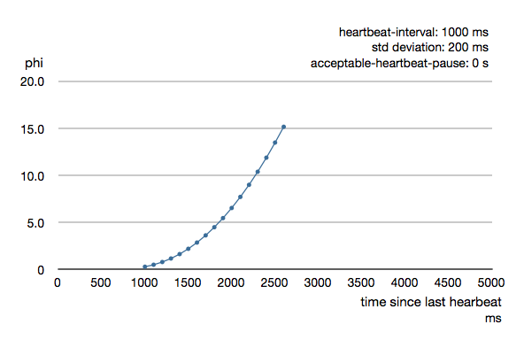

Remoting
For an introduction of remoting capabilities of Akka please see Location Transparency.
Preparing your ActorSystem for Remoting
The Akka remoting is a separate jar file. Make sure that you have the following dependency in your project:
<dependency>
<groupId>com.typesafe.akka</groupId>
<artifactId>akka-remote_2.10</artifactId>
<version>2.2.3</version>
</dependency>
To enable remote capabilities in your Akka project you should, at a minimum, add the following changes to your application.conf file:
akka {
actor {
provider = "akka.remote.RemoteActorRefProvider"
}
remote {
enabled-transports = ["akka.remote.netty.tcp"]
netty.tcp {
hostname = "127.0.0.1"
port = 2552
}
}
}
As you can see in the example above there are four things you need to add to get started:
- Change provider from akka.actor.LocalActorRefProvider to akka.remote.RemoteActorRefProvider
- Add host name - the machine you want to run the actor system on; this host name is exactly what is passed to remote systems in order to identify this system and consequently used for connecting back to this system if need be, hence set it to a reachable IP address or resolvable name in case you want to communicate across the network.
- Add port number - the port the actor system should listen on, set to 0 to have it chosen automatically
Note
The port number needs to be unique for each actor system on the same machine even if the actor systems have different names. This is because each actor system has its own network subsystem listening for connections and handling messages as not to interfere with other actor systems.
The example above only illustrates the bare minimum of properties you have to add to enable remoting. All settings are described in Remote Configuration.
Looking up Remote Actors
actorSelection(path) will obtain an ActorSelection to an Actor on a remote node:
ActorSelection selection =
context.actorSelection("akka.tcp://app@10.0.0.1:2552/user/serviceA/worker");
As you can see from the example above the following pattern is used to find an actor on a remote node:
akka.<protocol>://<actorsystemname>@<hostname>:<port>/<actor path>
Once you obtained a selection to the actor you can interact with it they same way you would with a local actor, e.g.:
selection.tell("Pretty awesome feature", getSelf());
To acquire an ActorRef for an ActorSelection you need to send a message to the selection and use the getSender reference of the reply from the actor. There is a built-in Identify message that all Actors will understand and automatically reply to with a ActorIdentity message containing the ActorRef. This can also be done with the resolveOne method of the ActorSelection, which returns a Future of the matching ActorRef.
Note
For more details on how actor addresses and paths are formed and used, please refer to Actor References, Paths and Addresses.
Creating Actors Remotely
If you want to use the creation functionality in Akka remoting you have to further amend the application.conf file in the following way (only showing deployment section):
akka {
actor {
deployment {
/sampleActor {
remote = "akka.tcp://sampleActorSystem@127.0.0.1:2553"
}
}
}
}
The configuration above instructs Akka to react when an actor with path /sampleActor is created, i.e. using system.actorOf(new Props(...), "sampleActor"). This specific actor will not be directly instantiated, but instead the remote daemon of the remote system will be asked to create the actor, which in this sample corresponds to sampleActorSystem@127.0.0.1:2553.
Once you have configured the properties above you would do the following in code:
ActorRef actor = system.actorOf(Props.create(SampleActor.class), "sampleActor");
actor.tell("Pretty slick", ActorRef.noSender());
The actor class SampleActor has to be available to the runtimes using it, i.e. the classloader of the actor systems has to have a JAR containing the class.
Note
In order to ensure serializability of Props when passing constructor arguments to the actor being created, do not make the factory a non-static inner class: this will inherently capture a reference to its enclosing object, which in most cases is not serializable. It is best to make a static inner class which implements Creator.
Serializability of all Props can be tested by setting the configuration item akka.actor.serialize-creators=on. Only Props whose deploy has LocalScope are exempt from this check.
Note
You can use asterisks as wildcard matches for the actor path sections, so you could specify: /*/sampleActor and that would match all sampleActor on that level in the hierarchy. You can also use wildcard in the last position to match all actors at a certain level: /someParent/*. Non-wildcard matches always have higher priority to match than wildcards, so: /foo/bar is considered more specific than /foo/* and only the highest priority match is used. Please note that it cannot be used to partially match section, like this: /foo*/bar, /f*o/bar etc.
Programmatic Remote Deployment
To allow dynamically deployed systems, it is also possible to include deployment configuration in the Props which are used to create an actor: this information is the equivalent of a deployment section from the configuration file, and if both are given, the external configuration takes precedence.
With these imports:
import akka.actor.ActorRef;
import akka.actor.Address;
import akka.actor.AddressFromURIString;
import akka.actor.Deploy;
import akka.actor.Props;
import akka.actor.ActorSystem;
import akka.remote.RemoteScope;
and a remote address like this:
Address addr = new Address("akka.tcp", "sys", "host", 1234);
addr = AddressFromURIString.parse("akka.tcp://sys@host:1234"); // the same
you can advise the system to create a child on that remote node like so:
ActorRef ref = system.actorOf(Props.create(SampleActor.class).withDeploy(
new Deploy(new RemoteScope(addr))));
Watching Remote Actors
Watching a remote actor is not different than watching a local actor, as described in Lifecycle Monitoring aka DeathWatch.
Warning
Caveat: Watching an ActorRef acquired with actorFor does not trigger Terminated for lost connections. actorFor is deprecated in favor of actorSelection. Acquire the ActorRef to watch with Identify and ActorIdentity as described in Identifying Actors via Actor Selection.
Failure Detector
Under the hood remote death watch uses heartbeat messages and a failure detector to generate Terminated message from network failures and JVM crashes, in addition to graceful termination of watched actor.
The heartbeat arrival times is interpreted by an implementation of The Phi Accrual Failure Detector.
The suspicion level of failure is given by a value called phi. The basic idea of the phi failure detector is to express the value of phi on a scale that is dynamically adjusted to reflect current network conditions.
The value of phi is calculated as:
phi = -log10(1 - F(timeSinceLastHeartbeat))
where F is the cumulative distribution function of a normal distribution with mean and standard deviation estimated from historical heartbeat inter-arrival times.
In the Remote Configuration you can adjust the akka.remote.watch-failure-detector.threshold to define when a phi value is considered to be a failure.
A low threshold is prone to generate many false positives but ensures a quick detection in the event of a real crash. Conversely, a high threshold generates fewer mistakes but needs more time to detect actual crashes. The default threshold is 10 and is appropriate for most situations. However in cloud environments, such as Amazon EC2, the value could be increased to 12 in order to account for network issues that sometimes occur on such platforms.
The following chart illustrates how phi increase with increasing time since the previous heartbeat.
Phi is calculated from the mean and standard deviation of historical inter arrival times. The previous chart is an example for standard deviation of 200 ms. If the heartbeats arrive with less deviation the curve becomes steeper, i.e. it is possible to determine failure more quickly. The curve looks like this for a standard deviation of 100 ms.

To be able to survive sudden abnormalities, such as garbage collection pauses and transient network failures the failure detector is configured with a margin, akka.remote.watch-failure-detector.acceptable-heartbeat-pause. You may want to adjust the Remote Configuration of this depending on you environment. This is how the curve looks like for acceptable-heartbeat-pause configured to 3 seconds.

Serialization
When using remoting for actors you must ensure that the props and messages used for those actors are serializable. Failing to do so will cause the system to behave in an unintended way.
For more information please see Serialization
Routers with Remote Destinations
It is absolutely feasible to combine remoting with Routing. This is also done via configuration:
akka {
actor {
deployment {
/serviceA/aggregation {
router = "round-robin"
nr-of-instances = 10
target {
nodes = ["akka.tcp://app@10.0.0.2:2552", "akka://app@10.0.0.3:2552"]
}
}
}
}
}
This configuration setting will clone the actor “aggregation” 10 times and deploy it evenly distributed across the two given target nodes.
Description of the Remoting Sample
There is a more extensive remote example that comes with the Akka distribution. Please have a look here for more information: Remote Sample This sample demonstrates both, remote deployment and look-up of remote actors. First, let us have a look at the common setup for both scenarios (this is common.conf):
akka {
actor {
provider = "akka.remote.RemoteActorRefProvider"
}
remote {
netty.tcp {
hostname = "127.0.0.1"
}
}
# Uncomment the following four lines to employ the 'secure cookie handshake'
# This requires the client to have the known secure-cookie and properly
# transmit it to the server upon connection. Because both the client and server
# programs use this common.conf file, they will both have the cookie
#remote {
# secure-cookie = "0009090D040C030E03070D0509020F050B080400"
# require-cookie = on
#}
}
This enables the remoting by installing the RemoteActorRefProvider and chooses the default remote transport. All other options will be set specifically for each show case.
Note
Be sure to replace the default IP 127.0.0.1 with the real address the system is reachable by if you deploy onto multiple machines!
Remote Lookup
In order to look up a remote actor, that one must be created first. For this purpose, we configure an actor system to listen on port 2552 (this is a snippet from application.conf):
calculator {
include "common"
akka {
# LISTEN on tcp port 2552
remote.netty.tcp.port = 2552
}
}
Then the actor must be created. For all code which follows, assume these imports:
import akka.actor.ActorRef;
import akka.actor.ActorSystem;
import akka.actor.Props;
import akka.actor.UntypedActor;
import akka.kernel.Bootable;
import com.typesafe.config.ConfigFactory;
The actor doing the work will be this one:
public class JSimpleCalculatorActor extends UntypedActor {
@Override
public void onReceive(Object message) {
if (message instanceof Op.Add) {
Op.Add add = (Op.Add) message;
System.out.println("Calculating " + add.getN1() + " + " + add.getN2());
getSender().tell(new Op.AddResult(
add.getN1(), add.getN2(), add.getN1() + add.getN2()),
getSelf());
} else if (message instanceof Op.Subtract) {
Op.Subtract subtract = (Op.Subtract) message;
System.out.println("Calculating " + subtract.getN1() + " - " +
subtract.getN2());
getSender().tell(new Op.SubtractResult(
subtract.getN1(), subtract.getN2(), subtract.getN1() - subtract.getN2()),
getSelf());
} else {
unhandled(message);
}
}
}
// #actor
and we start it within an actor system using the above configuration
public class JCalculatorApplication implements Bootable {
private ActorSystem system;
public JCalculatorApplication() {
system = ActorSystem.create("CalculatorApplication", ConfigFactory.load()
.getConfig("calculator"));
ActorRef actor = system.actorOf(Props.create(JSimpleCalculatorActor.class),
"simpleCalculator");
}
@Override
public void startup() {
}
@Override
public void shutdown() {
system.shutdown();
}
}
// #setup
With the service actor up and running, we may look it up from another actor system, which will be configured to use port 2553 (this is a snippet from application.conf).
remotelookup {
include "common"
akka {
remote.netty.tcp.port = 2553
}
}
The actor which will query the calculator is a quite simple one for demonstration purposes
public class JLookupActor extends UntypedActor {
private final String path;
private ActorRef remoteActor = null;
public JLookupActor(String path) {
this.path = path;
sendIdentifyRequest();
}
private void sendIdentifyRequest() {
getContext().actorSelection(path).tell(new Identify(path), getSelf());
}
@Override
public void onReceive(Object message) throws Exception {
if (message instanceof ActorIdentity) {
remoteActor = ((ActorIdentity) message).getRef();
} else if (message.equals(ReceiveTimeout.getInstance())) {
sendIdentifyRequest();
} else if (remoteActor == null) {
System.out.println("Not ready yet");
} else if (message instanceof Op.MathOp) {
// send message to server actor
remoteActor.tell(message, getSelf());
} else if (message instanceof Op.AddResult) {
Op.AddResult result = (Op.AddResult) message;
System.out.printf("Add result: %d + %d = %d\n", result.getN1(),
result.getN2(), result.getResult());
} else if (message instanceof Op.SubtractResult) {
Op.SubtractResult result = (Op.SubtractResult) message;
System.out.printf("Sub result: %d - %d = %d\n", result.getN1(),
result.getN2(), result.getResult());
} else {
unhandled(message);
}
}
}
and it is created from an actor system using the aforementioned client’s config.
public class JLookupApplication implements Bootable {
private ActorSystem system;
private ActorRef actor;
public JLookupApplication() {
system = ActorSystem.create("LookupApplication", ConfigFactory.load().getConfig(
"remotelookup"));
final String path =
"akka.tcp://CalculatorApplication@127.0.0.1:2552/user/simpleCalculator";
actor = system.actorOf(Props.create(JLookupActor.class, path), "lookupActor");
}
public void doSomething(Op.MathOp mathOp) {
actor.tell(mathOp, null);
}
@Override
public void startup() {
}
@Override
public void shutdown() {
system.shutdown();
}
}
// #setup
Requests which come in via doSomething will be sent to the client actor, which will use the actor reference that was identified earlier. Observe how the actor system name using in actorSelection matches the remote system’s name, as do IP and port number. Top-level actors are always created below the "/user" guardian, which supervises them.
Remote Deployment
Creating remote actors instead of looking them up is not visible in the source code, only in the configuration file. This section is used in this scenario (this is a snippet from application.conf):
remotecreation {
include "common"
akka {
actor {
deployment {
/advancedCalculator {
remote = "akka.tcp://CalculatorApplication@127.0.0.1:2552"
}
}
}
remote.netty.tcp.port = 2554
}
}
For all code which follows, assume these imports:
import akka.actor.ActorRef;
import akka.actor.ActorSystem;
import akka.actor.Props;
import akka.actor.UntypedActor;
import akka.kernel.Bootable;
import com.typesafe.config.ConfigFactory;
The server actor can multiply or divide numbers:
public class JAdvancedCalculatorActor extends UntypedActor {
@Override
public void onReceive(Object message) throws Exception {
if (message instanceof Op.Multiply) {
Op.Multiply multiply = (Op.Multiply) message;
System.out.println("Calculating " + multiply.getN1() + " * "
+ multiply.getN2());
getSender().tell(
new Op.MultiplicationResult(multiply.getN1(), multiply.getN2(),
multiply.getN1() * multiply.getN2()), getSelf());
} else if (message instanceof Op.Divide) {
Op.Divide divide = (Op.Divide) message;
System.out.println("Calculating " + divide.getN1() + " / "
+ divide.getN2());
getSender().tell(
new Op.DivisionResult(divide.getN1(), divide.getN2(), divide.getN1()
/ divide.getN2()), getSelf());
} else {
unhandled(message);
}
}
}
// #actor
The client actor looks like in the previous example
public class JCreationActor extends UntypedActor {
private final ActorRef remoteActor;
public JCreationActor(ActorRef remoteActor) {
this.remoteActor = remoteActor;
}
@Override
public void onReceive(Object message) throws Exception {
if (message instanceof Op.MathOp) {
// send message to server actor
remoteActor.tell(message, getSelf());
} else if (message instanceof Op.MultiplicationResult) {
Op.MultiplicationResult result = (Op.MultiplicationResult) message;
System.out.printf("Mul result: %d * %d = %d\n",
result.getN1(), result.getN2(), result.getResult());
} else if (message instanceof Op.DivisionResult) {
Op.DivisionResult result = (Op.DivisionResult) message;
System.out.printf("Div result: %.0f / %d = %.2f\n",
result.getN1(), result.getN2(), result.getResult());
} else {
unhandled(message);
}
}
}
but the setup uses only actorOf:
public class JCreationApplication implements Bootable {
private ActorSystem system;
private ActorRef actor;
public JCreationApplication() {
system = ActorSystem.create("CreationApplication", ConfigFactory.load()
.getConfig("remotecreation"));
final ActorRef remoteActor = system.actorOf(Props.create(
JAdvancedCalculatorActor.class), "advancedCalculator");
actor = system.actorOf(Props.create(JCreationActor.class, remoteActor),
"creationActor");
}
public void doSomething(Op.MathOp mathOp) {
actor.tell(mathOp, null);
}
@Override
public void startup() {
}
@Override
public void shutdown() {
system.shutdown();
}
}
Observe how the name of the server actor matches the deployment given in the configuration file, which will transparently delegate the actor creation to the remote node.
Pluggable transport support
Akka can be configured to use various transports to communicate with remote systems. The core component of this feature is the akka.remote.Transport SPI. Transport implementations must extend this trait. Transports can be loaded by setting the akka.remote.enabled-transports configuration key to point to one or more configuration sections containing driver descriptions.
An example of setting up the default Netty based SSL driver as default:
akka {
remote {
enabled-transports = [akka.remote.netty.ssl]
netty.ssl.security {
key-store = "mykeystore"
trust-store = "mytruststore"
key-store-password = "changeme"
key-password = "changeme"
trust-store-password = "changeme"
protocol = "TLSv1"
random-number-generator = "AES128CounterSecureRNG"
enabled-algorithms = [TLS_RSA_WITH_AES_128_CBC_SHA]
}
}
}
An example of setting up a custom transport implementation:
akka {
remote {
applied-transports = ["akka.remote.mytransport"]
mytransport {
# The transport-class configuration entry is required, and
# it must contain the fully qualified name of the transport
# implementation
transport-class = "my.package.MyTransport"
# It is possible to decorate Transports with additional services.
# Adapters should be registered in the "adapters" sections to
# be able to apply them to transports
applied-adapters = []
# Driver specific configuration options has to be in the same
# section:
some-config = foo
another-config = bar
}
Remote Events
It is possible to listen to events that occur in Akka Remote, and to subscribe/unsubscribe to these events you simply register as listener to the below described types in on the ActorSystem.eventStream.
Note
To subscribe to any remote event, subscribe to RemotingLifecycleEvent. To subscribe to events related only to the lifecycle of associations, subscribe to akka.remote.AssociationEvent.
Note
The use of term "Association" instead of "Connection" reflects that the remoting subsystem may use connectionless transports, but an association similar to transport layer connections is maintained between endpoints by the Akka protocol.
By default an event listener is registered which logs all of the events described below. This default was chosen to help setting up a system, but it is quite common to switch this logging off once that phase of the project is finished.
Note
In order to switch off the logging, set akka.remote.log-remote-lifecycle-events = off in your application.conf.
To be notified when an association is over ("disconnected") listen to DisassociatedEvent which holds the direction of the association (inbound or outbound) and the addresses of the involved parties.
To be notified when an association is successfully established ("connected") listen to AssociatedEvent which holds the direction of the association (inbound or outbound) and the addresses of the involved parties.
To intercept errors directly related to associations, listen to AssociationErrorEvent which holds the direction of the association (inbound or outbound), the addresses of the involved parties and the Throwable cause.
To be notified when the remoting subsystem is ready to accept associations, listen to RemotingListenEvent which contains the addresses the remoting listens on.
To be notified when the remoting subsystem has been shut down, listen to RemotingShutdownEvent.
To intercept generic remoting related errors, listen to RemotingErrorEvent which holds the Throwable cause.
Remote Security
Akka provides a couple of ways to enhance security between remote nodes (client/server):
- Untrusted Mode
- Security Cookie Handshake
Untrusted Mode
As soon as an actor system can connect to another remotely, it may in principle send any possible message to any actor contained within that remote system. One example may be sending a PoisonPill to the system guardian, shutting that system down. This is not always desired, and it can be disabled with the following setting:
akka.remote.untrusted-mode = on
This disallows sending of system messages (actor life-cycle commands, DeathWatch, etc.) and any message extending PossiblyHarmful to the system on which this flag is set. Should a client send them nonetheless they are dropped and logged (at DEBUG level in order to reduce the possibilities for a denial of service attack). PossiblyHarmful covers the predefined messages like PoisonPill and Kill, but it can also be added as a marker trait to user-defined messages.
In summary, the following operations are ignored by a system configured in untrusted mode when incoming via the remoting layer:
- remote deployment (which also means no remote supervision)
- remote DeathWatch
- system.stop(), PoisonPill, Kill
- sending any message which extends from the PossiblyHarmful marker interface, which includes Terminated
Note
Enabling the untrusted mode does not remove the capability of the client to freely choose the target of its message sends, which means that messages not prohibited by the above rules can be sent to any actor in the remote system. It is good practice for a client-facing system to only contain a well-defined set of entry point actors, which then forward requests (possibly after performing validation) to another actor system containing the actual worker actors. If messaging between these two server-side systems is done using local ActorRef (they can be exchanged safely between actor systems within the same JVM), you can restrict the messages on this interface by marking them PossiblyHarmful so that a client cannot forge them.
Secure Cookie Handshake
Akka remoting also allows you to specify a secure cookie that will be exchanged and ensured to be identical in the connection handshake between the client and the server. If they are not identical then the client will be refused to connect to the server.
The secure cookie can be any kind of string. But the recommended approach is to generate a cryptographically secure cookie using this script $AKKA_HOME/scripts/generate_config_with_secure_cookie.sh or from code using the akka.util.Crypt.generateSecureCookie() utility method.
You have to ensure that both the connecting client and the server have the same secure cookie as well as the require-cookie option turned on.
Here is an example config:
akka.remote {
secure-cookie = "090A030E0F0A05010900000A0C0E0C0B03050D05"
require-cookie = on
}
SSL
SSL can be used as the remote transport by adding akka.remote.netty.ssl to the enabled-transport configuration section. See a description of the settings in the Remote Configuration section.
The SSL support is implemented with Java Secure Socket Extension, please consult the offical Java Secure Socket Extension documentation and related resources for troubleshooting.
Note
When using SHA1PRNG on Linux it's recommended specify -Djava.security.egd=file:/dev/./urandom as argument to the JVM to prevent blocking. It is NOT as secure because it reuses the seed. Use '/dev/./urandom', not '/dev/urandom' as that doesn't work according to Bug ID: 6202721.
Remote Configuration
There are lots of configuration properties that are related to remoting in Akka. We refer to the following reference file for more information:
#####################################
# Akka Remote Reference Config File #
#####################################
# This is the reference config file that contains all the default settings.
# Make your edits/overrides in your application.conf.
# comments about akka.actor settings left out where they are already in akka-
# actor.jar, because otherwise they would be repeated in config rendering.
akka {
actor {
serializers {
akka-containers = "akka.remote.serialization.MessageContainerSerializer"
proto = "akka.remote.serialization.ProtobufSerializer"
daemon-create = "akka.remote.serialization.DaemonMsgCreateSerializer"
}
serialization-bindings {
# Since com.google.protobuf.Message does not extend Serializable but
# GeneratedMessage does, need to use the more specific one here in order
# to avoid ambiguity
"akka.actor.SelectionPath" = akka-containers
"com.google.protobuf.GeneratedMessage" = proto
"akka.remote.DaemonMsgCreate" = daemon-create
}
deployment {
default {
# if this is set to a valid remote address, the named actor will be
# deployed at that node e.g. "akka://sys@host:port"
remote = ""
target {
# A list of hostnames and ports for instantiating the children of a
# router
# The format should be on "akka://sys@host:port", where:
# - sys is the remote actor system name
# - hostname can be either hostname or IP address the remote actor
# should connect to
# - port should be the port for the remote server on the other node
# The number of actor instances to be spawned is still taken from the
# nr-of-instances setting as for local routers; the instances will be
# distributed round-robin among the given nodes.
nodes = []
}
}
}
}
remote {
### General settings
# Timeout after which the startup of the remoting subsystem is considered
# to be failed. Increase this value if your transport drivers (see the
# enabled-transports section) need longer time to be loaded.
startup-timeout = 10 s
# Timout after which the graceful shutdown of the remoting subsystem is
# considered to be failed. After the timeout the remoting system is
# forcefully shut down. Increase this value if your transport drivers
# (see the enabled-transports section) need longer time to stop properly.
shutdown-timeout = 10 s
# Before shutting down the drivers, the remoting subsystem attempts to flush
# all pending writes. This setting controls the maximum time the remoting is
# willing to wait before moving on to shut down the drivers.
flush-wait-on-shutdown = 2 s
# Reuse inbound connections for outbound messages
use-passive-connections = on
# Controls the backoff interval after a refused write is reattempted.
# (Transports may refuse writes if their internal buffer is full)
backoff-interval = 0.01 s
# Acknowledgment timeout of management commands sent to the transport stack.
command-ack-timeout = 30 s
# If set to a nonempty string remoting will use the given dispatcher for
# its internal actors otherwise the default dispatcher is used. Please note
# that since remoting can load arbitrary 3rd party drivers (see
# "enabled-transport" and "adapters" entries) it is not guaranteed that
# every module will respect this setting.
use-dispatcher = ""
### Security settings
# Enable untrusted mode for full security of server managed actors, prevents
# system messages to be send by clients, e.g. messages like 'Create',
# 'Suspend', 'Resume', 'Terminate', 'Supervise', 'Link' etc.
untrusted-mode = off
# Should the remote server require that its peers share the same
# secure-cookie (defined in the 'remote' section)? Secure cookies are passed
# between during the initial handshake. Connections are refused if the initial
# message contains a mismatching cookie or the cookie is missing.
require-cookie = off
# Generate your own with the script availbale in
# '$AKKA_HOME/scripts/generate_config_with_secure_cookie.sh' or using
# 'akka.util.Crypt.generateSecureCookie'
secure-cookie = ""
### Logging
# If this is "on", Akka will log all inbound messages at DEBUG level,
# if off then they are not logged
log-received-messages = off
# If this is "on", Akka will log all outbound messages at DEBUG level,
# if off then they are not logged
log-sent-messages = off
# Sets the log granularity level at which Akka logs remoting events. This setting
# can take the values OFF, ERROR, WARNING, INFO, DEBUG, or ON. For compatibility
# reasons the setting "on" will default to "debug" level. Please note that the effective
# logging level is still determined by the global logging level of the actor system:
# for example debug level remoting events will be only logged if the system
# is running with debug level logging.
# Failures to deserialize received messages also fall under this flag.
log-remote-lifecycle-events = on
# Logging of message types with payload size in bytes larger than
# this value. Maximum detected size per message type is logged once,
# with an increase threshold of 10%.
# By default this feature is turned off. Activate it by setting the property to
# a value in bytes, such as 1000b. Note that for all messages larger than this
# limit there will be extra performance and scalability cost.
log-frame-size-exceeding = off
### Failure detection and recovery
# Settings for the Phi accrual failure detector (http://ddg.jaist.ac.jp/pub/HDY+04.pdf
# [Hayashibara et al]) used by the remoting subsystem to detect failed
# connections.
transport-failure-detector {
# FQCN of the failure detector implementation.
# It must implement akka.remote.FailureDetector and have
# a public constructor with a com.typesafe.config.Config and
# akka.actor.EventStream parameter.
implementation-class = "akka.remote.PhiAccrualFailureDetector"
# How often keep-alive heartbeat messages should be sent to each connection.
heartbeat-interval = 1 s
# Defines the failure detector threshold.
# A low threshold is prone to generate many wrong suspicions but ensures
# a quick detection in the event of a real crash. Conversely, a high
# threshold generates fewer mistakes but needs more time to detect
# actual crashes.
threshold = 7.0
# Number of the samples of inter-heartbeat arrival times to adaptively
# calculate the failure timeout for connections.
max-sample-size = 100
# Minimum standard deviation to use for the normal distribution in
# AccrualFailureDetector. Too low standard deviation might result in
# too much sensitivity for sudden, but normal, deviations in heartbeat
# inter arrival times.
min-std-deviation = 100 ms
# Number of potentially lost/delayed heartbeats that will be
# accepted before considering it to be an anomaly.
# This margin is important to be able to survive sudden, occasional,
# pauses in heartbeat arrivals, due to for example garbage collect or
# network drop.
acceptable-heartbeat-pause = 3 s
}
# Settings for the Phi accrual failure detector (http://ddg.jaist.ac.jp/pub/HDY+04.pdf
# [Hayashibara et al]) used for remote death watch.
watch-failure-detector {
# FQCN of the failure detector implementation.
# It must implement akka.remote.FailureDetector and have
# a public constructor with a com.typesafe.config.Config and
# akka.actor.EventStream parameter.
implementation-class = "akka.remote.PhiAccrualFailureDetector"
# How often keep-alive heartbeat messages should be sent to each connection.
heartbeat-interval = 1 s
# Defines the failure detector threshold.
# A low threshold is prone to generate many wrong suspicions but ensures
# a quick detection in the event of a real crash. Conversely, a high
# threshold generates fewer mistakes but needs more time to detect
# actual crashes.
threshold = 10.0
# Number of the samples of inter-heartbeat arrival times to adaptively
# calculate the failure timeout for connections.
max-sample-size = 200
# Minimum standard deviation to use for the normal distribution in
# AccrualFailureDetector. Too low standard deviation might result in
# too much sensitivity for sudden, but normal, deviations in heartbeat
# inter arrival times.
min-std-deviation = 100 ms
# Number of potentially lost/delayed heartbeats that will be
# accepted before considering it to be an anomaly.
# This margin is important to be able to survive sudden, occasional,
# pauses in heartbeat arrivals, due to for example garbage collect or
# network drop.
acceptable-heartbeat-pause = 4 s
# How often to check for nodes marked as unreachable by the failure
# detector
unreachable-nodes-reaper-interval = 1s
# After the heartbeat request has been sent the first failure detection
# will start after this period, even though no heartbeat mesage has
# been received.
expected-response-after = 3 s
}
# After failed to establish an outbound connection, the remoting will mark the
# address as failed. This configuration option controls how much time should
# be elapsed before reattempting a new connection. While the address is
# gated, all messages sent to the address are delivered to dead-letters.
# If this setting is 0, the remoting will always immediately reattempt
# to establish a failed outbound connection and will buffer writes until
# it succeeds.
retry-gate-closed-for = 0 s
# If the retry gate function is disabled (see retry-gate-closed-for) the
# remoting subsystem will always attempt to reestablish failed outbound
# connections. The settings below together control the maximum number of
# reattempts in a given time window. The number of reattempts during
# a window of "retry-window" will be maximum "maximum-retries-in-window".
retry-window = 60 s
maximum-retries-in-window = 3
# The length of time to gate an address whose name lookup has failed
# or has explicitly signalled that it will not accept connections
# (remote system is shutting down or the requesting system is quarantined).
# No connection attempts will be made to an address while it remains
# gated. Any messages sent to a gated address will be directed to dead
# letters instead. Name lookups are costly, and the time to recovery
# is typically large, therefore this setting should be a value in the
# order of seconds or minutes.
gate-invalid-addresses-for = 60 s
# This settings controls how long a system will be quarantined after
# catastrophic communication failures that result in the loss of system
# messages. Quarantining prevents communication with the remote system
# of a given UID. This function can be disabled by setting the value
# to "off".
quarantine-systems-for = 60s
# This setting defines the maximum number of unacknowledged system messages
# allowed for a remote system. If this limit is reached the remote system is
# declared to be dead and its UID marked as tainted.
system-message-buffer-size = 1000
# This setting defines the maximum idle time after an individual
# acknowledgement for system messages is sent. System message delivery
# is guaranteed by explicit acknowledgement messages. These acks are
# piggybacked on ordinary traffic messages. If no traffic is detected
# during the time period configured here, the remoting will send out
# an individual ack.
system-message-ack-piggyback-timeout = 1 s
# This setting defines the time after messages that have not been
# explicitly acknowledged or negatively acknowledged are resent.
# Messages that were negatively acknowledged are always immediately
# resent.
resend-interval = 1 s
### Transports and adapters
# List of the transport drivers that will be loaded by the remoting.
# A list of fully qualified config paths must be provided where
# the given configuration path contains a transport-class key
# pointing to an implementation class of the Transport interface.
# If multiple transports are provided, the address of the first
# one will be used as a default address.
enabled-transports = ["akka.remote.netty.tcp"]
# Transport drivers can be augmented with adapters by adding their
# name to the applied-adapters setting in the configuration of a
# transport. The available adapters should be configured in this
# section by providing a name, and the fully qualified name of
# their corresponding implementation. The class given here
# must implement akka.akka.remote.transport.TransportAdapterProvider
# and have public constructor without parameters.
adapters {
gremlin = "akka.remote.transport.FailureInjectorProvider"
trttl = "akka.remote.transport.ThrottlerProvider"
}
### Default configuration for the Netty based transport drivers
netty.tcp {
# The class given here must implement the akka.remote.transport.Transport
# interface and offer a public constructor which takes two arguments:
# 1) akka.actor.ExtendedActorSystem
# 2) com.typesafe.config.Config
transport-class = "akka.remote.transport.netty.NettyTransport"
# Transport drivers can be augmented with adapters by adding their
# name to the applied-adapters list. The last adapter in the
# list is the adapter immediately above the driver, while
# the first one is the top of the stack below the standard
# Akka protocol
applied-adapters = []
transport-protocol = tcp
# The default remote server port clients should connect to.
# Default is 2552 (AKKA), use 0 if you want a random available port
# This port needs to be unique for each actor system on the same machine.
port = 2552
# The hostname or ip to bind the remoting to,
# InetAddress.getLocalHost.getHostAddress is used if empty
hostname = ""
# Enables SSL support on this transport
enable-ssl = false
# Sets the connectTimeoutMillis of all outbound connections,
# i.e. how long a connect may take until it is timed out
connection-timeout = 15 s
# If set to "<id.of.dispatcher>" then the specified dispatcher
# will be used to accept inbound connections, and perform IO. If "" then
# dedicated threads will be used.
# Please note that the Netty driver only uses this configuration and does
# not read the "akka.remote.use-dispatcher" entry. Instead it has to be
# configured manually to point to the same dispatcher if needed.
use-dispatcher-for-io = ""
# Sets the high water mark for the in and outbound sockets,
# set to 0b for platform default
write-buffer-high-water-mark = 0b
# Sets the low water mark for the in and outbound sockets,
# set to 0b for platform default
write-buffer-low-water-mark = 0b
# Sets the send buffer size of the Sockets,
# set to 0b for platform default
send-buffer-size = 256000b
# Sets the receive buffer size of the Sockets,
# set to 0b for platform default
receive-buffer-size = 256000b
# Maximum message size the transport will accept, but at least
# 32000 bytes.
# Please note that UDP does not support arbitrary large datagrams,
# so this setting has to be chosen carefully when using UDP.
# Both send-buffer-size and receive-buffer-size settings has to
# be adjusted to be able to buffer messages of maximum size.
maximum-frame-size = 128000b
# Sets the size of the connection backlog
backlog = 4096
# Enables the TCP_NODELAY flag, i.e. disables Nagle’s algorithm
tcp-nodelay = on
# Enables TCP Keepalive, subject to the O/S kernel’s configuration
tcp-keepalive = on
# Enables SO_REUSEADDR, which determines when an ActorSystem can open
# the specified listen port (the meaning differs between *nix and Windows)
# Valid values are "on", "off" and "off-for-windows"
# due to the following Windows bug: http://bugs.sun.com/bugdatabase/view_bug.do?bug_id=4476378
# "off-for-windows" of course means that it's "on" for all other platforms
tcp-reuse-addr = off-for-windows
# Used to configure the number of I/O worker threads on server sockets
server-socket-worker-pool {
# Min number of threads to cap factor-based number to
pool-size-min = 2
# The pool size factor is used to determine thread pool size
# using the following formula: ceil(available processors * factor).
# Resulting size is then bounded by the pool-size-min and
# pool-size-max values.
pool-size-factor = 1.0
# Max number of threads to cap factor-based number to
pool-size-max = 2
}
# Used to configure the number of I/O worker threads on client sockets
client-socket-worker-pool {
# Min number of threads to cap factor-based number to
pool-size-min = 2
# The pool size factor is used to determine thread pool size
# using the following formula: ceil(available processors * factor).
# Resulting size is then bounded by the pool-size-min and
# pool-size-max values.
pool-size-factor = 1.0
# Max number of threads to cap factor-based number to
pool-size-max = 2
}
}
netty.udp = ${akka.remote.netty.tcp}
netty.udp {
transport-protocol = udp
}
netty.ssl = ${akka.remote.netty.tcp}
netty.ssl = {
# Enable SSL/TLS encryption.
# This must be enabled on both the client and server to work.
enable-ssl = true
security {
# This is the Java Key Store used by the server connection
key-store = "keystore"
# This password is used for decrypting the key store
key-store-password = "changeme"
# This password is used for decrypting the key
key-password = "changeme"
# This is the Java Key Store used by the client connection
trust-store = "truststore"
# This password is used for decrypting the trust store
trust-store-password = "changeme"
# Protocol to use for SSL encryption, choose from:
# Java 6 & 7:
# 'SSLv3', 'TLSv1'
# Java 7:
# 'TLSv1.1', 'TLSv1.2'
protocol = "TLSv1"
# Example: ["TLS_RSA_WITH_AES_128_CBC_SHA", "TLS_RSA_WITH_AES_256_CBC_SHA"]
# You need to install the JCE Unlimited Strength Jurisdiction Policy
# Files to use AES 256.
# More info here:
# http://docs.oracle.com/javase/7/docs/technotes/guides/security/SunProviders.html#SunJCEProvider
enabled-algorithms = ["TLS_RSA_WITH_AES_128_CBC_SHA"]
# There are three options, in increasing order of security:
# "" or SecureRandom => (default)
# "SHA1PRNG" => Can be slow because of blocking issues on Linux
# "AES128CounterSecureRNG" => fastest startup and based on AES encryption
# algorithm
# "AES256CounterSecureRNG"
# The following use one of 3 possible seed sources, depending on
# availability: /dev/random, random.org and SecureRandom (provided by Java)
# "AES128CounterInetRNG"
# "AES256CounterInetRNG" (Install JCE Unlimited Strength Jurisdiction
# Policy Files first)
# Setting a value here may require you to supply the appropriate cipher
# suite (see enabled-algorithms section above)
random-number-generator = ""
}
}
}
}
Note
Setting properties like the listening IP and port number programmatically is best done by using something like the following:
ConfigFactory.parseString("akka.remote.netty.tcp.hostname=\"1.2.3.4\"")
.withFallback(ConfigFactory.load());
Contents